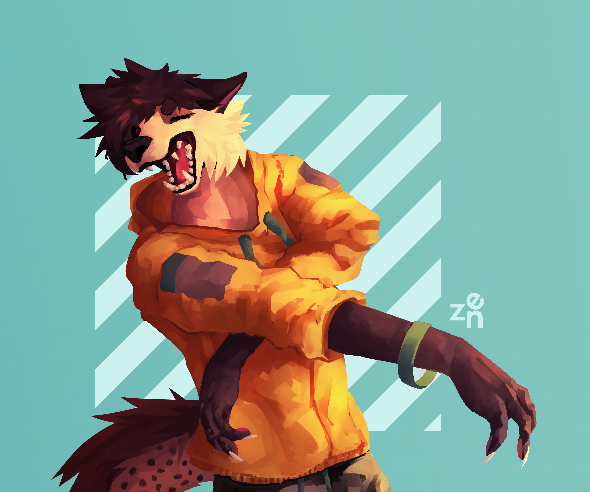

I am honestly addicted to my hobbies: art and music. Knowing that I can save paper by drawing digitally or make an orchestra roar with a simple software is the best that have happened in my life. Alright then, without further ado:
I draw!
I have a background art albeit it's quite dated - I drew and joined art competiitons when I was in kindergarten. After that, I kind of dropped art and moved on.
But, one random day in July 2018, I had this urge to draw. I didn't know what to draw, where to draw; I just want to draw. So, I hastily picked a theme to draw: standing animals; Disney-style (sort of). Other than that, I sometimes do design too!
Art has a descriptive capability beyond 1001 words; shall we see the results!




How do I make my art?
Di sini nanti ada embed